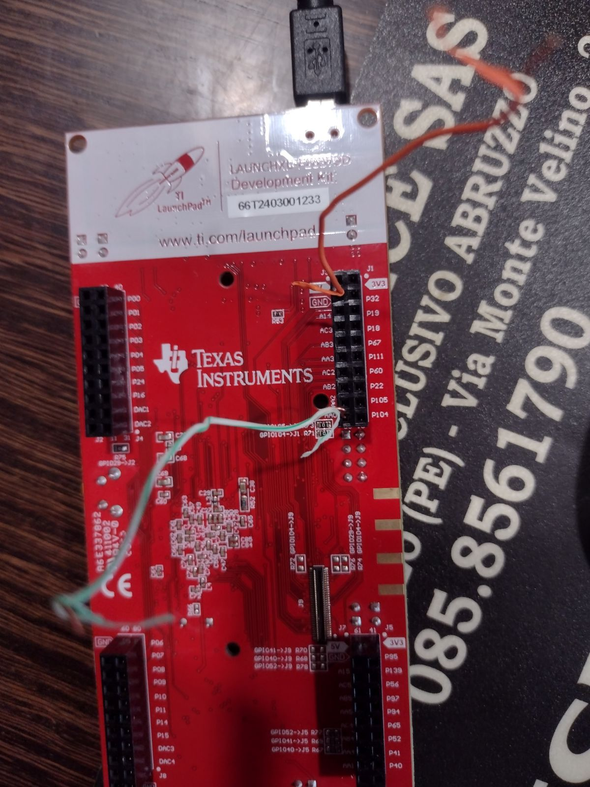

Real-Time Polyphonic Pitch Detection: Researched and developed high-performance, low-latency polyphonic pitch detection algorithms in C++ for guitars and string instruments, solving complex harmonic overlap and real-time frequency estimation challenges.
Custom FFT & DSP Engine Design: Engineered custom Fast Fourier Transform (FFT) algorithms, spectral audio morphing, physical modeling synthesis, and dynamic pitch-shifting routines tailored for real-time digital signal processing.
RTOS & Embedded Architecture: Utilized PREEMPT_RT Linux and later FreeRTOS on Texas Instruments C2000 and NXP LPC microcontrollers to guarantee deterministic real-time execution.
Hardware Evolution & "Democracy" Board: Iterated through hardware prototypes before reaching the final architecture combining an FPGA with a microcontroller dedicated to real-time pitch detection on a custom-designed board named "democracy".
Audio Analyzer & FX Stompbox Prototyping: Built a standalone audio analyzer platform for electric instruments combining note-specific DSP, formant filtering, waveform morphing, and LFO modulation for real-time audio manipulation.
CI/CD & Algorithmic QA: Implemented Continuous Integration (CI) pipelines and rigorous automated testing suites to validate algorithmic stability, regression prevention, and low-latency performance metrics.

Texas Instruments TMS320F28379D LaunchPad Development Kit